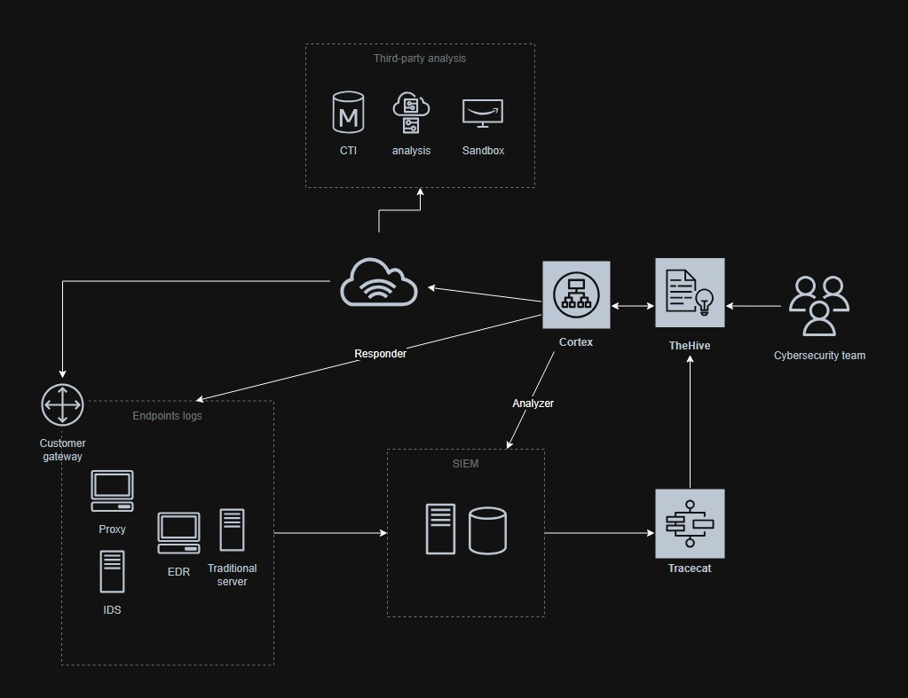

A Security Incident Response Platform is designed to assist security analysts and practitioners working in a SOC, CSIRT and CERT to track, investigate security incidents in a collaborative manner.
Every security analyst can work on investigations simultaneously. New or existing cases have their tasks, observables and IOCs and are all available to every team member. Those indicators must be able to tell the analyst if the current incident is linked to another incident that is still open or already closed.
The goal of a Security Incident Response Platform:
